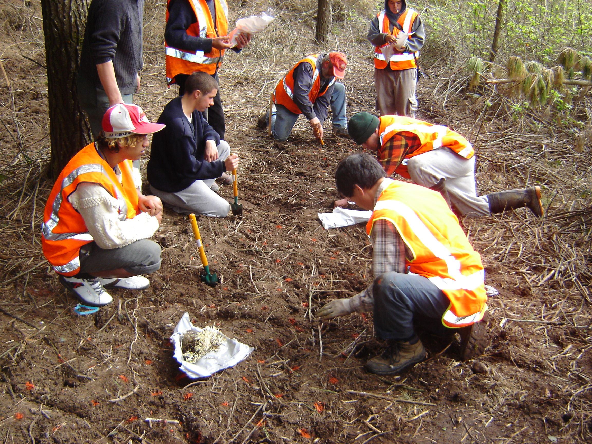

RESEARCH
With the help of Crop & Food, a trial planting in 2006 proved that the region’s dry summers, cold winters and free draining soils were ideal for ginseng. Further research into who might buy the ginseng showed the best prices were paid for naturally growing ginseng, in other words ginseng that looks, tastes and smells like wild ginseng plus was free of chemicals and high in the ginsenoside active ingredient.